A product guide and walkthrough: what every feature does, who can use it, how your data is protected, and how to deploy it.
Product
Brillienta Timesheet
Version
1.0.0
Platform
SharePoint Online · Microsoft Teams · SharePoint Framework
Edition of this guide
November 2026
Part 1
Overview
Brillienta Timesheet is a weekly timesheet, approval and project cost app that runs inside SharePoint Online and Microsoft Teams. People fill in their week against projects, tasks and activities; managers approve; admins and project managers see hours, billable share, cost and margin by project, person and period.
All data is stored in SharePoint lists on your own site (named BrillTS_…), protected by SharePoint permissions. Brillienta runs no server and receives no timesheet data.
About the screens in this guideEvery screenshot comes from version 1.0.0 running with the built-in sample organisation (“Contoso”). All people, names, email addresses and figures shown are fictional.
Part 2
Feature walkthrough
Overview
Everyone
All plans
The start page shows the current week against its target, hours this month and how much of it was billable, weeks that need attention (drafts, sent back), timesheets waiting for your approval, your tasks and your projects with their end dates and planned hours.
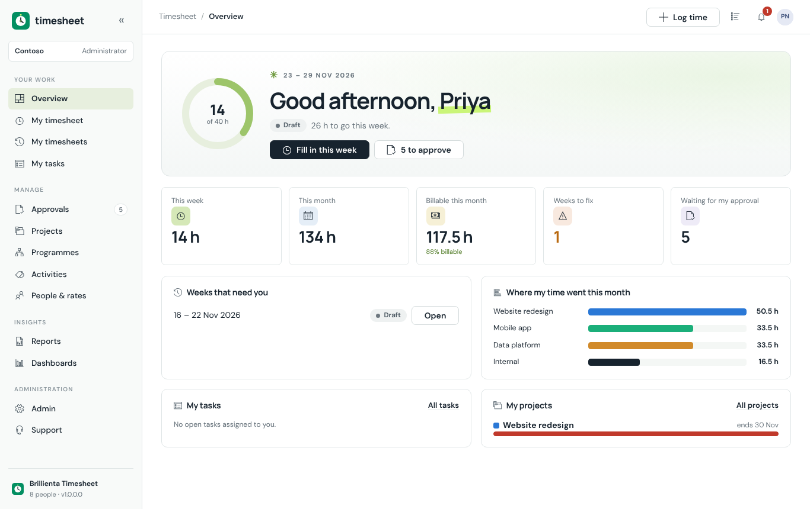
Overview. “Fill in this week” opens the timesheet; “to approve” opens Approvals.
My timesheet
Everyone
All plans
One line per project, task and activity, with hours per day, a billable flag, a ticket number and notes per day. Type 7.5, 7:30 or 45m; Ctrl+S saves. Clone an earlier week to start from it. The header shows the limits that apply to you, and the target is reduced by public holidays. Submitting checks the daily and weekly limits and the required fields before the week goes to approval; with role-based auto-approval it is approved at once.
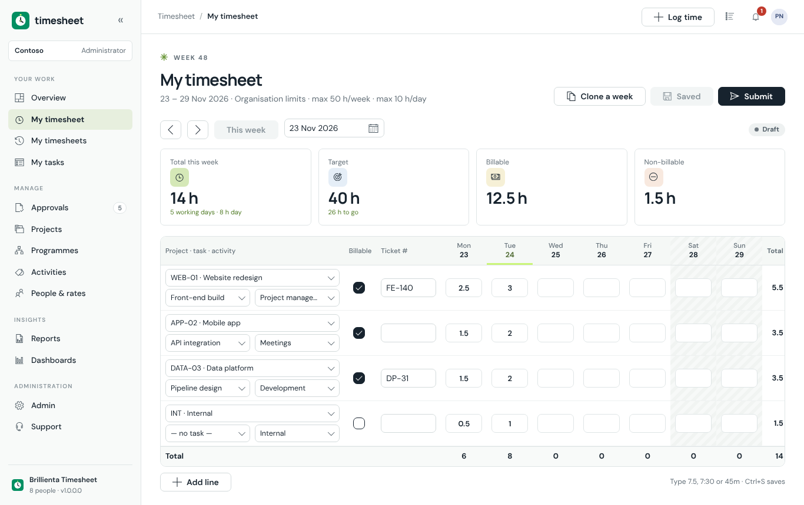
A week in progress. Totals, target, billable and non-billable hours update as you type.
My timesheets
Everyone
All plans
Every week with its status (draft, waiting, sent back, approved, not started), hours, billable hours and who approved it, with Excel export.
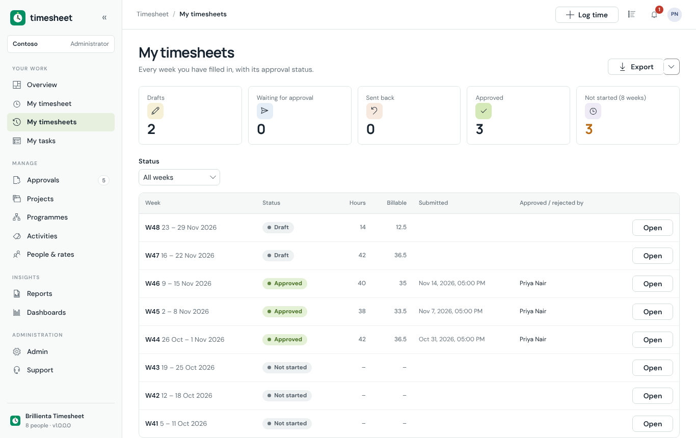
My timesheets. Weeks not started are listed too, so nothing is missed.
My tasks
Everyone
All plans
Tasks assigned to you, and open tasks on your projects that you can take on yourself (self-assign). Logging time on a task links the hours to it.
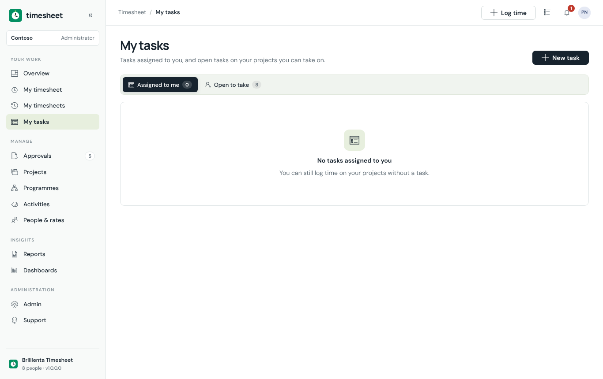
My tasks.
Approvals
Managers · project managers
All plans
Weeks waiting for you as manager, project manager or programme manager (administrators can approve every week). The checks column flags weeks below the target or over a limit. Approve or send back one week from its panel, or several at once; decided weeks can be reopened with a reason. Approved hours are written back to Brillienta Task Manager when that integration is on.
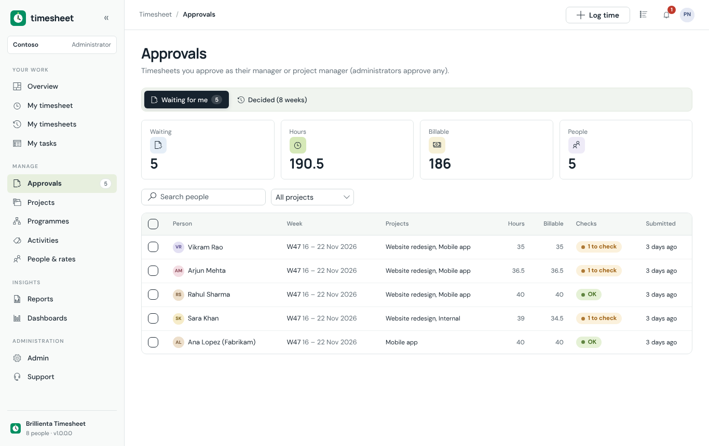
Approvals. Select several weeks to approve them together.
Projects and programmes
Admins · project managers
All plans · end dates and planned hours on Enterprise
Projects with client, code, colour, managers, members, billable default, hourly cost and bill rate, custom columns, planned hours and end dates. The list shows hours logged against plan and projects ending soon; managers get notified before an end date and when a project goes over plan. Programmes group projects under programme managers. Bulk create adds many projects, tasks or activities from a pasted table.
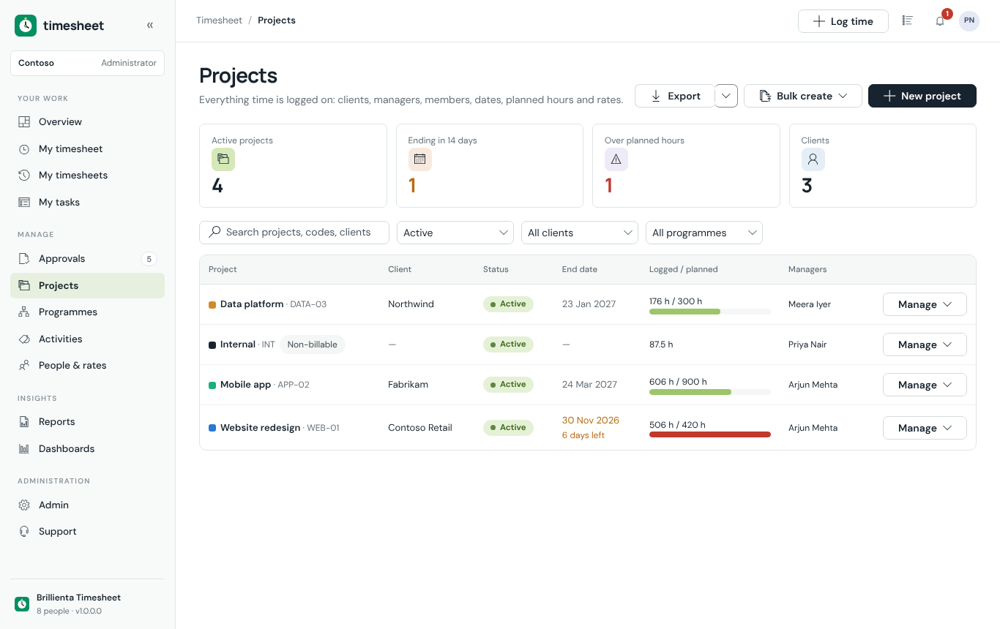
Projects.
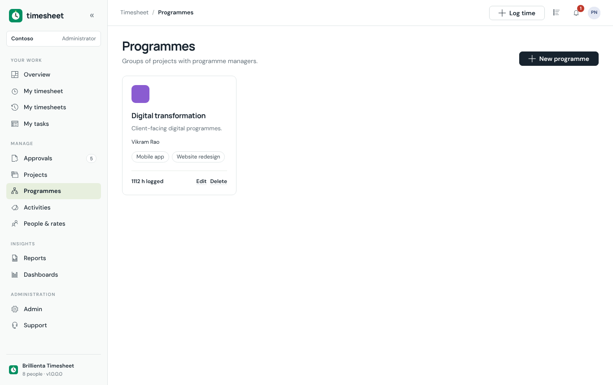
Programmes.
Activities
Admins
Pro
Kinds of work (development, meetings, travel…) with their default billable setting. Admins can require an activity on every line. The Time off activity is used for leave from Time off Manager.
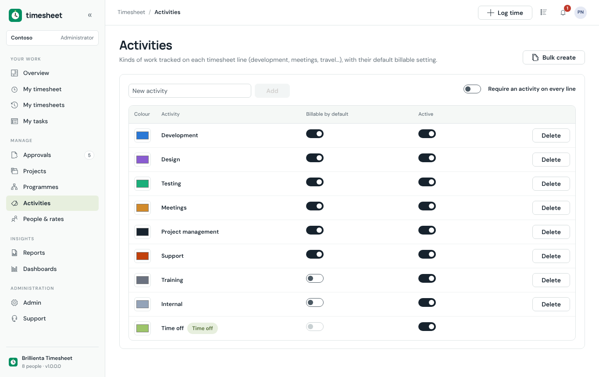
Activities.
People and rates
Admins
All plans
Everyone who logs time: role (Admin, Programme Manager, Project Manager, Team Manager, Member), manager, department, hourly cost and bill rate, and per-person working days. External (guest) users can be invited from here. The licence’s user count is shown at the top.
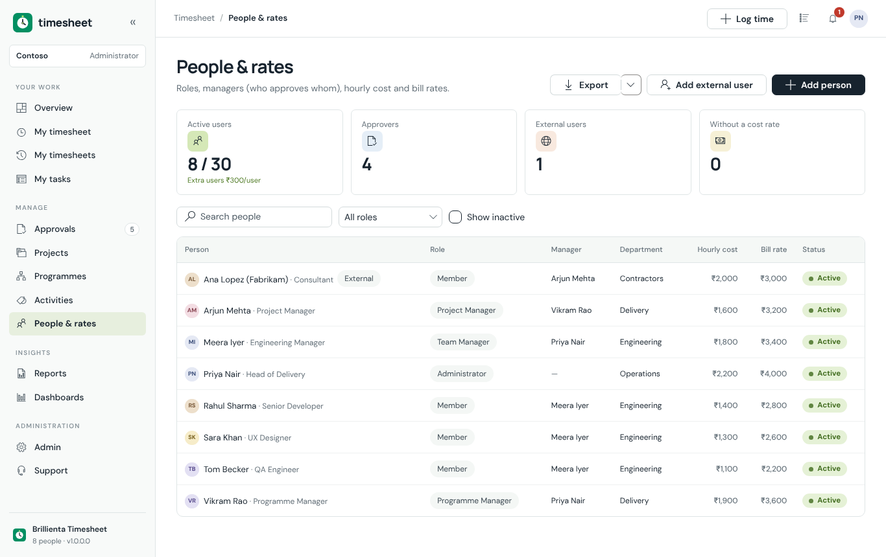
People & rates.
Reports
Managers · admins
All plans · custom reports on Enterprise
Project, my team, billable and non-billable, cost and margin, and utilisation reports for any period, filtered by projects, people, billable and timesheet status, with Excel and CSV export. Custom reports save your own grouping and columns.
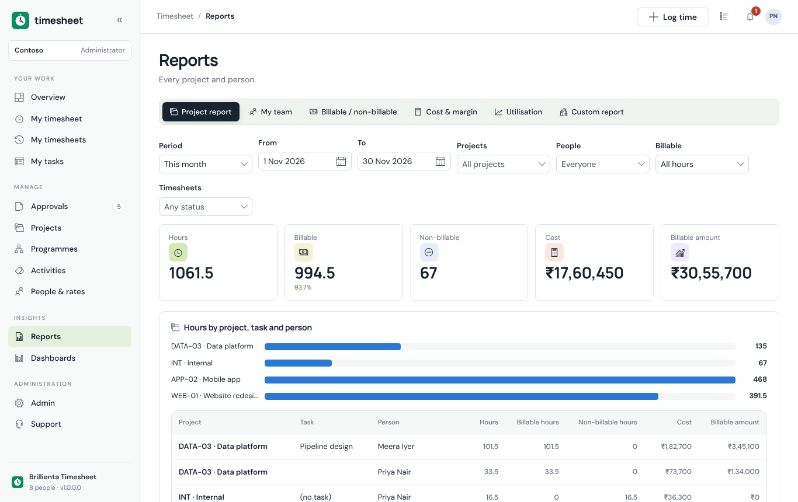
Reports. Costs and amounts use the rates in force when each week was approved.
Dashboards
Managers · admins
Enterprise
Charts of hours by project, activity and person, billable against non-billable, and trends. Start from the built-in dashboard, change it and save it as yours.
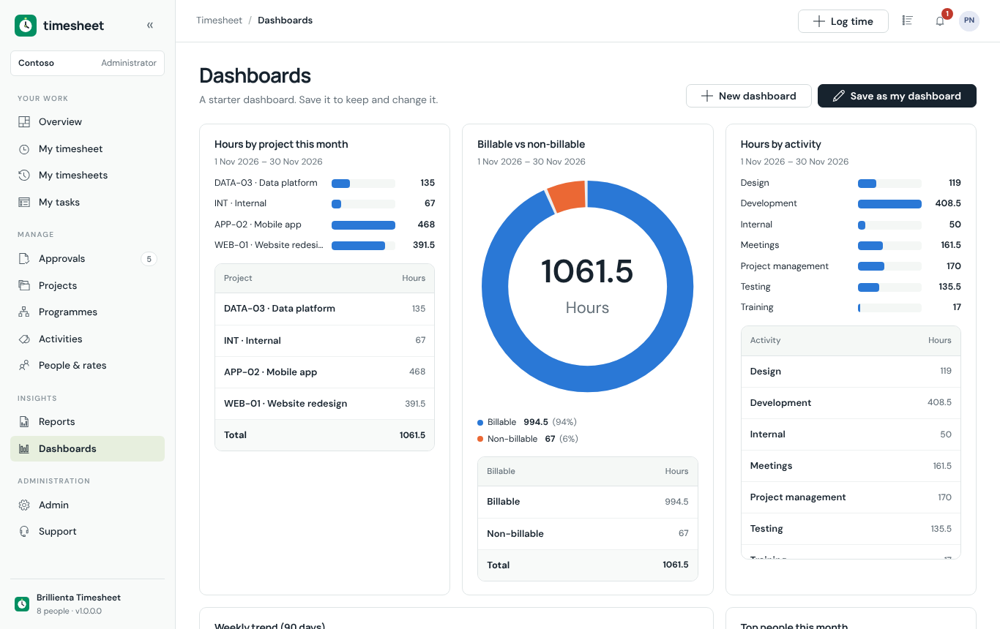
Dashboards.
Part 3
Administration
Admin holds the settings for everyone: organisation name, logo and colour; currency; tracking days, the first day of the week and public holidays; daily and weekly hour limits and rules by role, department or external user; auto-approval by role; costs and rates; custom columns on timesheet lines and projects; notifications, reminders and email templates; integrations; the licence; and schema & security, which checks and repairs the lists and keeps the BrillTS SharePoint groups in step with the roles. Every change is written to the audit log.
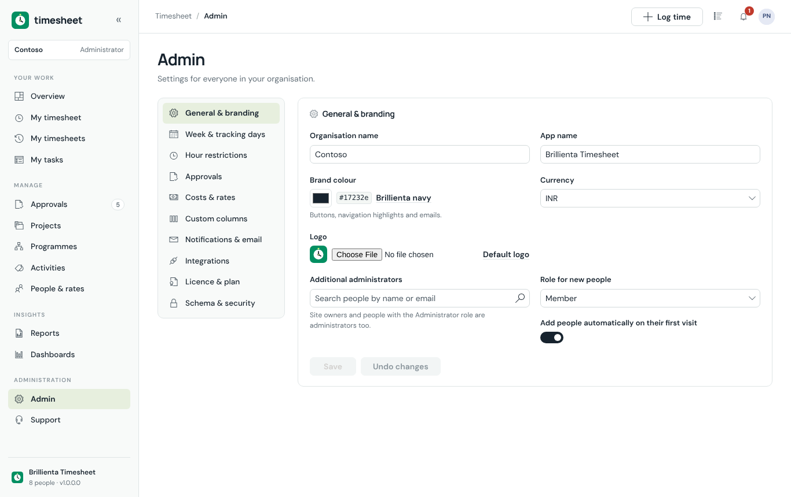
Admin › General & branding.
Part 4
Integrations
Microsoft Teams. A SharePoint admin selects the app in the tenant app catalog and selects Sync to Teams; it then appears in Teams under Apps › Built for your org as Brillienta Timesheet, as a personal app and a channel tab. Teams finds the timesheet site by itself with SharePoint search; with several sites, the one marked Use this site in Teams opens.
Teams and Outlook notifications: submitted, approved, sent back, reminders and project alerts, by email or Teams chat, or through a Power Automate flow from a shared mailbox.
Microsoft Planner: bring plans and tasks in as projects and tasks.
Microsoft 365 Copilot: download a declarative agent that answers questions about your timesheets from the SharePoint lists.
Time off Manager 365: approved leave fills in timesheets automatically.
Brillienta Task Manager: projects and tasks are synchronised, time logged there can be imported, and approved hours are written back.
Power Automate, Power BI and the SharePoint REST API: every list can be read by flows, reports and your own code; a webhook sends events to a flow.
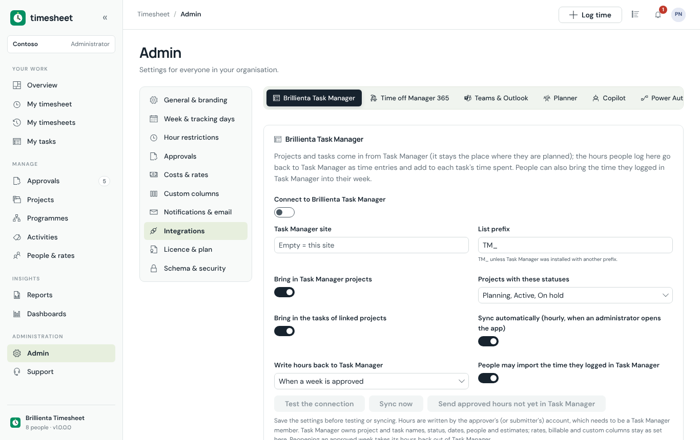
Admin › Integrations.
Part 5
Roles & security
Five roles: Admin, Programme Manager, Project Manager, Team Manager and Member. Members see their own timesheets; team managers the weeks of their people; project and programme managers the time on their projects; admins everything. Timesheets and entries use item-level permissions, so other people’s weeks are not readable even through SharePoint itself. The app keeps the SharePoint groups BrillTS Administrators, BrillTS Approvers and BrillTS External users in step with the roles. Operational lists (audit, notifications, email queue, tickets, saved reports) are kept out of search.
Part 6
Plans & licensing
Every installation starts with a 14-day trial of every feature. After that, a licence key from Brillienta (entered under Admin › Licence & plan) selects the plan:
Standard (10 users): weekly timesheets with approvals, cloning, project and team reports, billable tracking, hourly costs, four roles, bulk creation, custom columns, self-assigned tasks, Excel and CSV export.
Pro (30 users, extra users available): adds per-project bill rates, the Programme Manager role, role-based auto-approval, hour limits, reminders, activities and tracking days. External users as an option.
Enterprise (30 users, extra users available): adds holidays and per-person days, Time off Manager, Task Manager, Teams and Outlook, Planner, Copilot, project end dates and planned hours, rule-based limits, custom reports and dashboards, email templates, external users, Power Automate, API, Power BI and a dedicated account manager.
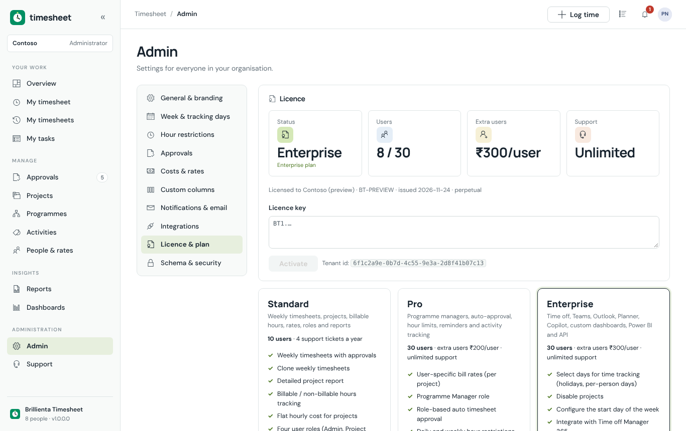
Admin › Licence & plan.
Part 7
Deployment
Upload Brillienta-Timesheet.sppkg to the tenant app catalog and deploy it to all sites.
In the SharePoint admin center › API access, approve the Microsoft Graph permissions you want (all optional).
Add the Brillienta Timesheet web part to a page on the site that will hold the data. The first administrator to open it runs the setup, which creates the lists and groups.
Optional: select Sync to Teams in the app catalog to add it to Teams.